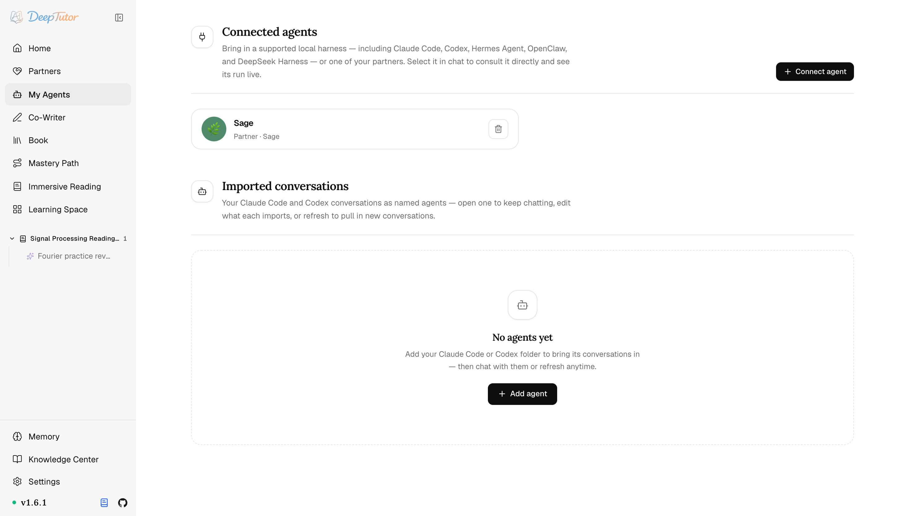
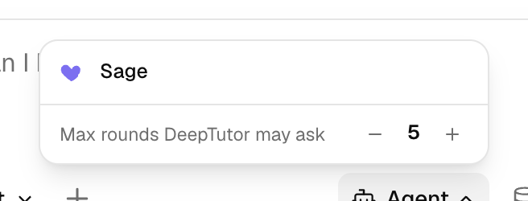
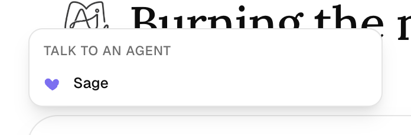
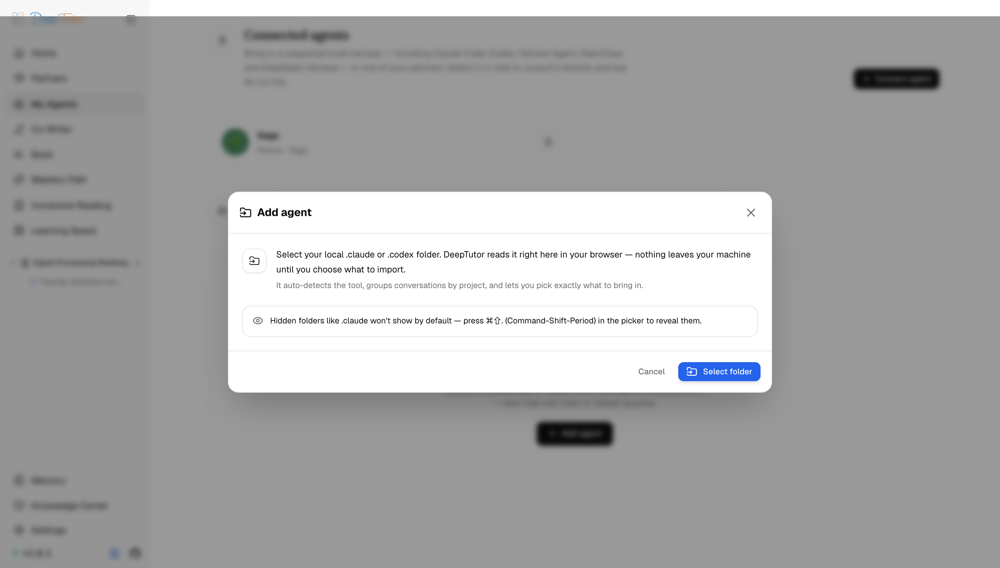

探索 DeepTutor我的智慧代理
Claude Code 聊過的歷史也能接著聊？DeepTutor 9 種智慧代理即時諮詢，無需重複設定！
我的智慧代理——在一輪聊天裡諮詢九種本機 agent harness 或某個夥伴，並把 Claude Code / Codex 對話匯入為有名字、可續聊的智慧代理。
原文連結：https://docs.deeptutor.info/zh-cn/explore/subagents/
你在 Claude Code 裡跟 AI 磨了半天的專案背景，一換工具全部清零，只能從頭再講一遍。這種事，你遇到過沒有？
相信不少朋友和我一樣，手裡的 Claude Code、Codex 都攢下了大堆歷史對話，扔了可惜，翻起來又麻煩。
前幾天我把 DeepTutor 的「我的智慧代理」（My Agents）功能完整玩了一遍：9 種本機智慧代理執行框架（agent harness）可以即時接入諮詢，Claude Code / Codex 的歷史對話還能匯入成有名字、可續聊的智慧代理。
但是這兩件事很多人一看頁面就搞混了，它們是完全不同的兩種玩法。下面拆開講。
它是什麼
My Agents（我的智慧代理）把其他智慧代理變成 DeepTutor 的上下文。
它做兩件不同的事：讓你在一輪聊天裡即時諮詢一個活的智慧代理（本機 9 種受支援的 harness 之一，或你的某個夥伴），以及把 Claude Code / Codex 歷史對話匯入為有名字、可搜尋、可續聊的智慧代理。
在哪裡找到
點選左側欄的 My Agents（我的智慧代理）。
在聊天裡你也有兩條捷徑觸達活的智慧代理：輸入框工具欄上的 Agent 膠囊（機器人圖示），或在訊息框裡輸入 @。

頁面分為兩節，正好對應這兩個概念。
連線的智慧代理：諮詢一個活的智慧代理
連線的智慧代理（connected agent）是 DeepTutor 能即時對話的真實智慧代理。
點選 Connect agent，從下面幾種裡選一個：
- 本機的一個 agent harness—— Claude Code 、 Codex 、 Antigravity CLI 、 Kimi CLI 、 opencode 、 MiMo Code 、 Hermes Agent 、 OpenClaw 或 DeepSeek Harness ，或
- 你的某個 夥伴（Partner）。
諮詢一個連線的智慧代理時，DeepTutor 不是把對話記錄黏進來，它真的執行那個智慧代理並把它的工作串流回傳。
在底層，連線的智慧代理是第三類上下文來源，擁有一項獨有能力：聊天迴圈裡的 consult_subagent 工具會多輪驅動該智慧代理，並在活動面板裡即時展示它的完整執行過程。
在聊天裡諮詢
用 Agent 膠囊選中智慧代理，然後設定 Max rounds DeepTutor may ask（DeepTutor 最多可追問的輪數），也就是這次諮詢裡來回輪次的上限。

輸入 @ 可篩選同一列表；選擇會持續到清除或替換。

一次即時諮詢長什麼樣
諮詢一個 Claude Code 智慧代理時，它會在自己的工作目錄裡執行：讀取檔案、grep、對著真實儲存庫推理。
它的工具呼叫會串流進入活動面板，同時 DeepTutor 把結論收攏進你的答覆。
諮詢一個夥伴時，DeepTutor 把問題送進那個夥伴自己的會話，於是夥伴會用它的靈魂（soul）、它的資料庫、它私有的記憶工具（partner_search、partner_read）以及技能（read_skill）來作答。
一個聊天執行緒會綁定到一個夥伴會話，因此追問會延續同一段對話。
匯入的對話：來自你歷史記錄的智慧代理
頁面的下半部分會匯入你已有的 Claude Code 與 Codex 對話，並把每個來源呈現為一個有名字的智慧代理，可搜尋、可開啟、可繼續聊，或在聊天裡引用。
點選 Add agent 匯入歷史。
先起名字，再選擇範圍：Claude Code 按專案 / 工作目錄，Codex 按日曆日期。
之後重新整理會重新同步同一範圍，並拉進其中的新對話。
這種選擇是刻意為之：你能精確決定終端機歷史裡哪些片段成為 DeepTutor 上下文。

匯入的智慧代理會顯示來源、對話數量與上次同步時間。
在這裡你可以：
開啟一段對話，在 DeepTutor 裡繼續聊。
重新整理某個智慧代理，拉進所選日期或專案範圍內的新對話。
在任意一輪聊天裡，透過 + → My Agents 引用一段匯入的對話：DeepTutor 會把它當作第三方對話記錄來讀（它仍是「他們的」對話，DeepTutor 不會以第一人稱代入）。
即時諮詢加歷史匯入，兩條路一起用，過去的對話隨叫隨到，是真的爽歪歪。
兩者的區別
| 連線的智慧代理 | 匯入的對話 | |
|---|---|---|
| 是什麼 | DeepTutor 即時執行並對話的活智慧代理 | 作為命名智慧代理引入的只讀歷史 |
| 來源 | 九種本機 harness 之一（Claude Code / Codex / Antigravity / Kimi / opencode / MiMo / Hermes / OpenClaw / DeepSeek Harness），或某個夥伴 | 過去的 Claude Code / Codex 會話 |
| 在聊天裡 | 用 Agent 膠囊或 @ 選擇；執行即時串流，選擇會持續 | 用 + → My Agents 引用，或開啟續聊 |
| 新鮮度 | 即時，每次諮詢都是 | 快照；用 Refresh 重新同步所選日期或專案 |
想繼續深挖
匯入或連線智慧代理時遇到問題，歡迎在留言區留言，把報錯的完整日誌貼出來，我看到會回覆。